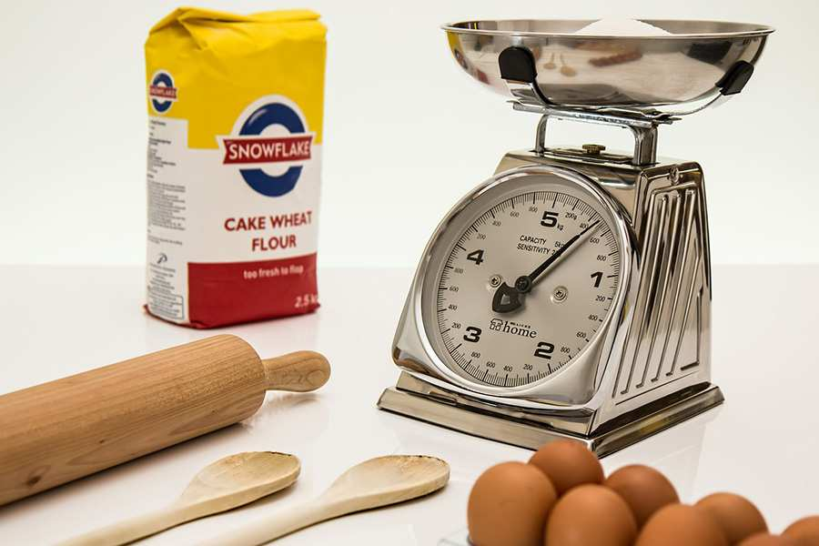

I once watched a friend pour brownie batter into a pan that was clearly too small.
"You're going to have a mess," I said.
"It'll be fine," she said. "How different can two inches be?"
Twenty minutes later, brownie batter was dripping onto the oven floor, smoking, and setting off her fire alarm. She stood there with a dish towel, fanning the smoke detector, looking exactly like I felt when I collapsed that wedding cake.
She learned that day: pan size matters. A lot.
I learned that day too. I learned that most people have no idea how to substitute pans. They guess. They hope. They end up with smoke alarms and wasted batter.
So let me show you the math. It's not complicated. But it will save your kitchen—and your dignity.
The Problem (Why Guessing Fails) Every recipe is written for a specific pan. That pan has three dimensions: length, width, and depth. Those dimensions determine volume—how much batter fits.
But volume isn't the only thing that matters. Area matters too. A shallow, wide pan will bake faster than a deep, narrow pan even if the volume is the same.
Example: A 9-inch round pan (2 inches deep) has 64 square inches of area and 128 cubic inches of volume. A 9x13 rectangular pan (2 inches deep) has 117 square inches of area and 234 cubic inches of volume.
Same depth. Very different area. The brownie batter will spread thinner in the 9x13, bake faster, and crisp up at the edges. The 9-inch round will produce thicker, chewier brownies.
That's why you can't just swap pans without doing the math. The final texture changes.
Step 1: Calculate the Original Pan Volume You need two measurements: area (length × width for rectangles; π × radius² for circles) and depth.
Rectangle or square: Area = length × width Volume = area × depth
Example: 9x13 pan, 2 inches deep. Area = 9 × 13 = 117 square inches Volume = 117 × 2 = 234 cubic inches
Circle: Area = π × radius² (radius = diameter ÷ 2) Volume = area × depth
Example: 9-inch round pan, 2 inches deep. Radius = 4.5 inches Area = 3.14 × (4.5 × 4.5) = 3.14 × 20.25 = 63.6 square inches (round to 64) Volume = 64 × 2 = 128 cubic inches
Loaf pan (rectangular but tapered): Measure the length, width at the top, width at the bottom, and depth. Average the top and bottom widths. Then multiply.
Example: 9x5 loaf pan. Top width 5 inches, bottom width 4 inches, depth 3 inches. Average width = (5 + 4) ÷ 2 = 4.5 inches Volume = 9 × 4.5 × 3 = 121.5 cubic inches
Pro tip: If you don't want to do the math, fill your pan with water and measure how many cups it holds. One cup = 14.4 cubic inches. That's your volume.
Step 2: Calculate the Substitute Pan Volume Same formulas. Just plug in the new pan's dimensions.
Example: You want to use an 8-inch square pan instead of a 9-inch round. 8-inch square, 2 inches deep: Area = 8 × 8 = 64 square inches Volume = 64 × 2 = 128 cubic inches
Compare: Original (9-inch round): 128 cubic inches Substitute (8-inch square): 128 cubic inches
Same volume! That's a perfect swap. The area is different (64 sq in vs 64 sq in—actually the same in this case, because 9-inch round area is also 64). But the volume matches exactly.
Not all swaps are this neat.
Step 3: Calculate the Scaling Factor for Batter If the substitute pan has a different volume, you need to adjust your batter amount.
Batter scaling factor = Substitute volume ÷ Original volume
Example: Original recipe uses a 9x13 pan (234 cubic inches). You only have a 9-inch round pan (128 cubic inches). 128 ÷ 234 = 0.55
You need 55% of the original batter. That's about half.
What do you do with the extra batter? Make cupcakes. Or a small loaf. Don't overfill the substitute pan.
The safety rule: Never fill a pan more than 2/3 full. Batters rise. If you fill to the brim, you will have overflow and a smoky oven.
Step 4: Adjust Baking Time A different pan means a different baking time. Here are the rules.
Same volume, different shape:
Wider pan (more area) = thinner batter layer = faster baking (reduce time 5-10 minutes)
Narrower pan (less area) = thicker batter layer = slower baking (increase time 5-10 minutes)
Same shape, different volume:
Larger pan = more batter = slower baking (increase time 10-20%)
Smaller pan = less batter = faster baking (reduce time 10-20%)
Different depth:
Deeper pan (same area) = much slower baking (add 20-30% time)
Shallower pan (same area) = much faster baking (reduce 20-30% time)
The golden rule: Use visual cues, not timers. Insert a toothpick. Check internal temperature. The timer is a suggestion, not a law.
Step 5: Adjust for Depth (The Overlooked Factor) Most people focus on area and forget depth. That's a mistake.
Example: A 9-inch round pan comes in two depths: 2 inches (standard) and 3 inches (deep). Same area (64 square inches), different volume (128 vs 192 cubic inches).
If you use a deep pan but keep the same batter amount, you'll get a thin layer. It will bake faster and might burn.
If you use a shallow pan but keep the same batter amount, you'll overfill it. Overflow disaster.
The fix: Match volume first, then area. Depth is secondary but important.
Common Pan Swaps (Cheat Sheet) Here are the volume calculations for standard pans. Use these to find matches.
Pan Dimensions Area (sq in) Volume (cubic in) Cups of batter Round 6" 6x2 28 56 4 Round 8" 8x2 50 100 7 Round 9" 9x2 64 128 9 Round 10" 10x2 79 158 11 Round 12" 12x2 113 226 16 Square 8" 8x8x2 64 128 9 Square 9" 9x9x2 81 162 11 Square 10" 10x10x2 100 200 14 Rect 9x13 9x13x2 117 234 16 Rect 8x8 8x8x2 64 128 9 Rect 7x11 7x11x2 77 154 11 Loaf 8x4 8x4x3 (avg width 3.5) 28 (area) 84 6 Loaf 9x5 9x5x3 (avg width 4.5) 40.5 122 8.5 Bundt 10-inch (varies) — ~300 20-22 Springform 9" 9x2.5 64 160 11 How to use this table: Find your original pan's volume. Find a substitute pan with similar volume (±10%). Match as closely as you can. Then adjust time.
The Example That Changed How I Bake I used to have a favorite cake recipe. It was written for a 9x13 pan. One day, I only had two 8-inch rounds.
Original: 9x13 pan, 2 inches deep → 234 cubic inches
Substitute: Two 8-inch rounds, each 2 inches deep → each has 100 cubic inches → total 200 cubic inches
Batter scaling factor: 200 ÷ 234 = 0.85
I needed 85% of the original batter. So I reduced everything by 15%. The cake turned out perfect—actually better, because the layers were thinner and baked more evenly.
What I learned: Two 8-inch rounds are not a perfect substitute for a 9x13. But they're close enough if you adjust the batter. Most people would have used the full batter, overfilled the rounds, and ended up with mushroom-shaped cakes.
Don't be most people. Do the math.
The Tool That Does This Instantly I built the Pan Size Substitution Tool because I was tired of doing πr²h in my head while my kids were asking for snacks.
The Depth Safety Margin Remember: never fill a pan more than 2/3 full.
How to check: Pour your batter into the pan. Measure the depth with a ruler. If the batter is more than 2/3 of the pan's height, you have too much.
Example: A 2-inch deep pan. 2/3 of 2 inches = 1.33 inches. Your batter should not rise higher than 1.33 inches before baking.
If it does, you have two options:
Remove batter (bake it separately in a small dish).
Use a larger pan.
Why this matters: Batter expands. Leavening creates gas. If there's no room to expand, the batter will push up and over the sides. Then you have a mess.
I've done this. It's not fun. The smoke alarm went off at 2 a.m. My husband was not impressed.
Baking Time Modifiers (Quick Reference) Change Time Adjustment Same volume, wider pan Reduce 5-10 min Same volume, narrower pan Increase 5-10 min Volume increased 20% Increase 10-15 min Volume decreased 20% Reduce 10-15 min Depth increased 50% Increase 20-30 min Depth decreased 50% Reduce 20-30 min Going from glass to metal Reduce 25°F (glass insulates; metal conducts heat faster) Going from metal to glass Increase 25°F The visual check list:
Cake: toothpick comes out clean, edges pull away, top springs back
Brownies: edges are set, center still slightly soft (they firm up as they cool)
Bread: internal temperature 190-210°F (88-99°C), hollow sound when tapped
Quick breads: toothpick clean, cracks on top are dry
The Disaster I Still Laugh About A few years ago, I was making a pumpkin bread for a school bake sale. The recipe called for two 9x5 loaf pans. I only had one 9x5 and one 8x4.
I thought, "How different can they be?"
9x5 loaf pan volume: 9 × 4.5 (avg width) × 3 = 121.5 cubic inches 8x4 loaf pan volume: 8 × 3.5 (avg width) × 3 = 84 cubic inches
That's a 30% difference. The smaller pan overflowed. Pumpkin bread dripped onto the oven floor, burned, and filled the house with smoke. The bake sale got 1.5 loaves instead of 2.
The lesson: Never assume. Always calculate.
When Not to Substitute Some pans are not interchangeable. Here are the hard no's.
Angel food cake pan: It has a tube in the center. That tube helps the cake climb. Do not substitute a regular round pan. The cake will collapse.
Bundt pan: The decorative shape affects baking time and release. If you substitute a regular pan, the cake won't have the same texture.
Springform pan: For cheesecakes. You need the removable sides. A regular pan will make it impossible to remove the cheesecake without destroying it.
Jelly roll pan (10x15): Very shallow (1 inch). If you substitute a deeper pan, the cake will be too thick to roll.
The rule: Some recipes are pan‑specific. If the recipe says "angel food cake pan" or "jelly roll pan," do not substitute unless you know exactly what you're doing.
The Formula Sheet (Tape This Inside Your Cabinet) Volume formulas:
Rectangular pan: length × width × height
Square pan: side × side × height
Round pan: 3.14 × (radius × radius) × height
Loaf pan: length × (average width) × height
Batter adjustment: Factor = substitute volume ÷ original volume New batter amount = original batter amount × factor
Time adjustment (starting point):
Wider pan: reduce 5-10 minutes
Narrower pan: increase 5-10 minutes
Deeper pan: add 20-30% time
Shallower pan: reduce 20-30% time
Safety rule: Never fill more than 2/3 full.
Test doneness with: Toothpick, thermometer, or your finger (if you're brave).
Why This Matters More Than You Think Pan substitution isn't just about avoiding messes. It's about getting the texture right.
A cake baked in a deeper pan will be denser, moister, and take longer to bake. A cake baked in a shallower pan will be lighter, drier, and bake faster.
If you substitute without adjusting, you're not making the same recipe. You're making something different.
That might be fine. Sometimes you want a thinner brownie or a taller cake. But at least know what you're getting.
The goal: Control. Not guessing. Not hoping. Control.
Once you know the math, you can substitute any pan with confidence. You'll know exactly how the batter will behave. You'll know when to adjust time. You'll never set off your smoke alarm again.
Well, almost never.
Your First Practice Next time you bake, try this:
Before you start, measure your pan.
Calculate its volume.
Compare it to the pan the recipe calls for.
If they're different, calculate the adjustment factor.
Adjust your batter amount or baking time accordingly.
Do this five times. By the fifth time, you won't need the calculator. You'll just know.
That's the goal. Not memorizing formulas. Building intuition.
The formulas are just tools. The intuition is what saves your brownies.
— Olivia
P.S. My friend with the brownie disaster? She now owns a ruler that lives in her kitchen drawer. She measures every pan before she bakes. We laughed about the smoke alarm incident last Thanksgiving. She said, "I've never overfilled a pan since." That's growth. 1010"Building Your First Ingredient Density Reference Chart"